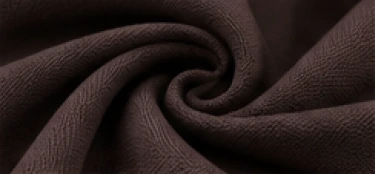
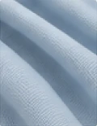
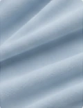
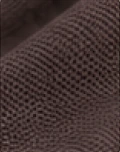
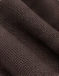
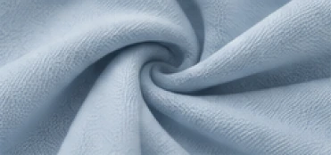
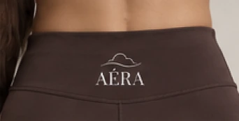

Recycled nylon
- Reduces plastic waste
- Verified GRS certified
- Durable & high performance
Purposeful fabric selection for performance, comfort and a lower environmental impact.

Tank with built-in bra75% TENCEL™ Lyocell
25% Elastane
Provides a soft, lightweight and flexible fit suitable for both low and high intensity activity, while TENCEL™ Lyocell offers enhanced breathability and a lower environmental impact.

Flowy boat-neck long sleeve top95% TENCEL™ Lyocell
5% Elastane
TENCEL™ Lyocell is derived from sustainably sourced wood pulp and produced in a closed-loop process, offering a soft hand feel and excellent breathability, ideal for a relaxed and versatile layering piece.

High-waisted leggings75% Recycled Nylon
25% Elastane
Recycled nylon reduces reliance on virgin materials and diverts plastic waste from landfills, while maintaining durability, stretch and performance for activewear.

Sweat headband75% Recycled Nylon
25% Elastane
Uses the same recycled nylon fabric as the leggings to ensure assortment consistency and efficient fabric utilisation, potentially reducing material waste through offcuts.
Working with verified suppliers to ensure responsible and transparent sourcing across our supply chain.
Partner with certified suppliers for TENCEL™ Lyocell and GRS-certified recycled nylon.
Work with audited factories that meet fair labour standards and have transparent production practices.
Require OEKO-TEX® STANDARD 100 certification or equivalent for chemical safety and product quality.
Begin with limited production batches to reduce overproduction and minimise inventory waste.



AÉRA logo at the back of the waistband, inside the tank, and on the headband.